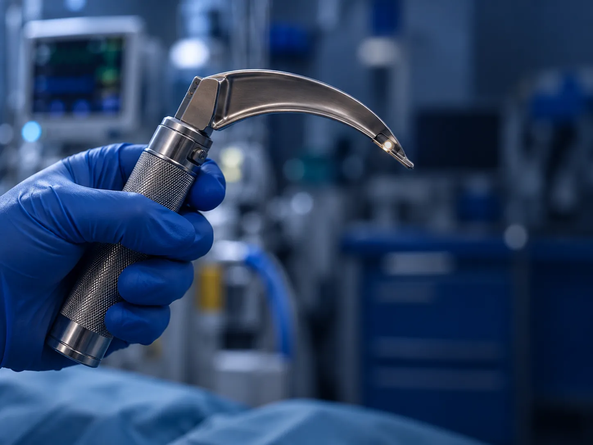

Para quem é
Se você vive a
realidade da emergência,
esta live é para você.
Internos e estudantes
que querem construir segurança para os primeiros plantões.
Recém-formados
que precisam de um guia prático para aplicar a ISR na vida real.
Plantonistas da UPA e do PS
que querem revisar, atualizar e padronizar sua conduta.

O que você vai aprender
Da teoria à prática,
com foco no que realmente
acontece no plantão.
Indicação da ISR
Quando indicar e quando não indicar.
Preparo do paciente
Avaliação, Estabilização e Otimização.
Drogas e doses
Escolha das medicações na prática, com raciocínio clínico.
Primeira tentativa
Técnica, posicionamento e dicas para aumentar o sucesso.
Plano B
O que fazer quando não der certo.
Pós-intubação
Manejo imediato, sedação, ventilação e próximos passos.
O que você recebe
Ferramentas práticas
para aplicar no seu plantão
desde o primeiro dia.
Live ao vivo
Com interação e casos reais.
Replay por 14 dias
Assista quantas vezes quiser.
Checklist pré-IOT
Para não esquecer nenhum passo.
Algoritmo visual da ISR
Material direto ao ponto.
Guia rápido de drogas
Com doses e principais cenários.
Fluxograma de resgate
Para situações de falha na IOT.
Como vai funcionar
Uma experiência
prática, dinâmica
e focada em resultados.
Casos reais
Situações do dia a dia da UPA e do PS.
Discussão prática
Raciocínio passo a passo com os professores.
Aplicação imediata
Dicas, macetes e pontos críticos.
Interação ao vivo
Tire suas dúvidas em tempo real.
Quem vai conduzir
Experiência real
de quem vive e ensina
a emergência todos os dias.
Prof. Diego Leite
- Anestesiologista
- Professor da Afya
- Preceptor de residência médica de Anestesiologia
- Foco no ensino de Anestesiologia
- Linguagem direta, didática e aplicável à realidade do plantão.
Prof. Gil Kléber
- Anestesiologista
- Professor da Afya
- Preceptor de residência médica de Anestesiologia
- Foco em simulação e prática
- Experiência no ensino de procedimentos em cenários críticos.
Perguntas frequentes
Dúvidas?
A gente responde.
Sim. A gravação fica disponível por 14 dias depois da transmissão.
Por 14 dias depois da live. Nesse período, você assiste ao replay quantas vezes quiser.
Não. A live foi pensada para internos, estudantes, recém-formados e plantonistas da UPA e do PS.
Depois da inscrição, você recebe as instruções de acesso à transmissão e ao replay.